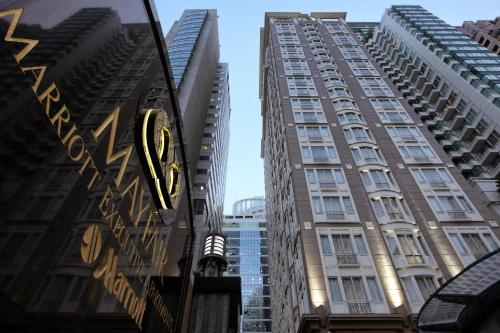
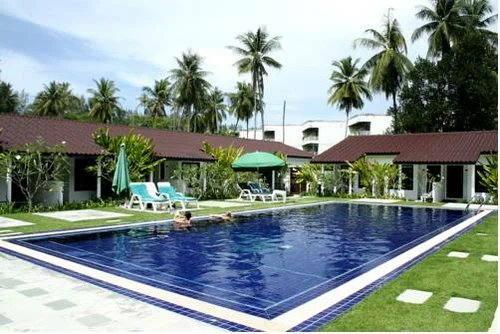
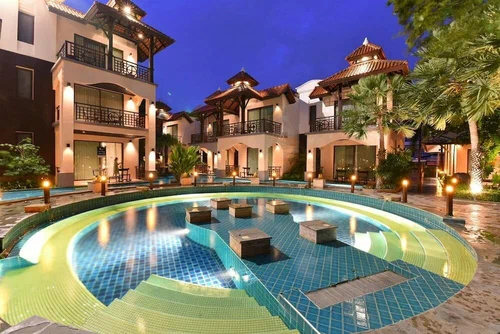

| 
Отель Mayfair, Bangkok - Marriott Executive Apartments находится в центре Бангкока. Из отеля Mayfair, Bangkok - Marriott Executive Apartments удобно добираться практически до любого места в городе. В близлежащем районе гости могут посмотреть часовню Эраван, площадь Siam Square, а также музей Suan Pakkard Palace. Каждое утро гости отеля Mayfair, Bangkok - Marriott Executive Apartments приглашаются на континентальный завтрак за дополнительную плату. В гостинице есть ресторан и 2 бара - один из них находится у бассейна, второй - в гостиной. Для яркого отдыха предназначены открытый бассейн, оздоровительный клуб, спа-ванна, сауна и фитнес-центр. Кроме того, в местном спа-центре имеются процедурные комнаты. Отель Mayfair, Bangkok - Marriott Executive Apartments предлагаем гостям разместиться в одном из 162 номеров, оборудованных по последнему слову техники. Постельные принадлежности премиум-класса, мини-бар, кухня, телевизор и DVD-проигрыватель - всё это ждет вас в номерах гостиницы. |
| 
Курортный отель Nai Yang Beach расположен в тихом заливе на северо-западном побережье острова Пхукет. К услугам гостей комфортабельные номера, спа-центр, открытый бассейн и бесплатная парковка. Из окон открывается красивый вид на тропический пейзаж.Курортный отель Nai Yang находится всего в 1 км от международного аэропорта Пхукета и всего в 5 минутах ходьбы от песчаных пляжей.Номера курортного отеля Nai Yang оформлены в современном стиле. В них имеются кондиционер, принадлежности для чая/кофе, телевизор с кабельными каналами, а также собственный балкон с видом на зеленый сад и бассейн. |
| 
Спа-отель Long Beach Garden расположен на берегу пляжа Вонг Амарт, в 1 часе езды от аэропорта Суварнабхуми. К услугам гостей бассейн с водопадом и 5 ресторанов. В лобби отеля можно воспользоваться бесплатным Wi-Fi.Отель Long Beach Garden расположен в Северной Паттайе, в 5 минутах езды от центра города. Поездка до международного аэропорта Донмыанг занимает 2 часа.Невероятного вида здание 4-звездочного спа-отеля класса делюкс Long Beach Garden напоминает 16-этажный пляж. Отель отвечает индивидуальным потребностям гостей и располагает всевозможными основными удобствами. На его территории можно посетить изумительный бассейн с водопадом и уютным пляжем.Спа-отель Long Beach Pavilion — это уникальный живописный оазис, расположенный на главной дороге в 300 метрах от пляжа. Перед всеми номерами струится вода, что добавляет особенную изюминку балконам 1 этажа.В каждом номере есть кабельное телевидение, холодильник и мини-бар. К каждому номеру прилегает ванная комната с душем с горячей/холодной водой.Гости могут пройти сеансы традиционного тайского массажа в спа-салоне или позаниматься в оздоровительном клубе |